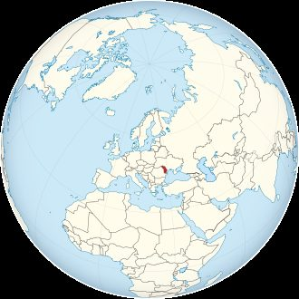
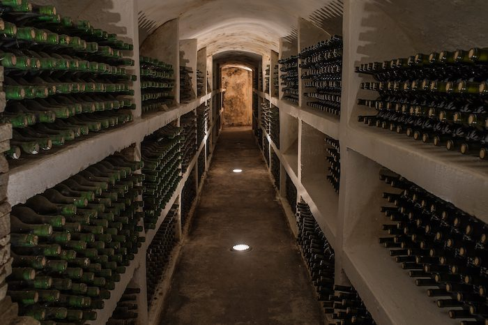
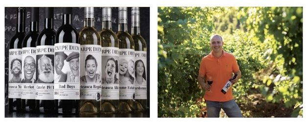
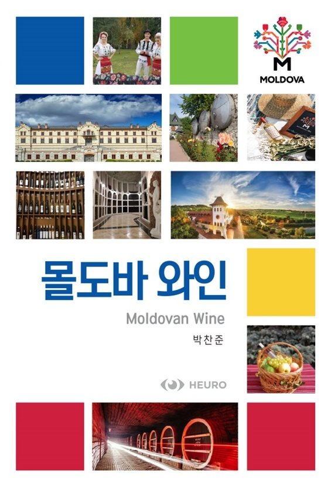
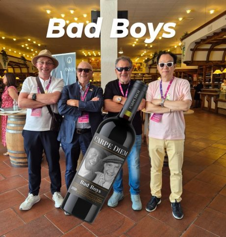
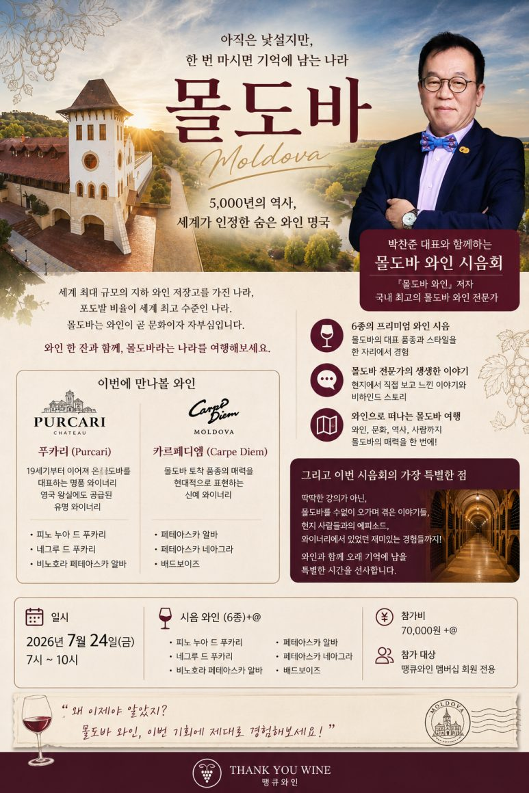

박찬준 대표님과 함께하는 몰도바 와인 멤버십 Only 시음회
아마 많은 분들이 처음에는 이렇게 생각하실 거예요.
아직은 낯설지만, 한 번 마시면 기억에 남는 나라 '몰도바'
'몰도바에서도 와인을 만든다고요?'
아마 많은 분들이 처음에는 이렇게 생각하실 거예요.
사실 몰도바는 유럽 동부에 위치한 작은 나라입니다. 루마니아와 우크라이나 사이에 자리하고 있으며, 국토의 대부분이 포도 재배에 적합한 기후와 토양을 갖추고 있어 오래전부터 와인을 만들어 온 전통적인 와인 생산국입니다.

놀랍게도 몰도바의 와인 역사는 약 5,000년이 넘는 것으로 알려져 있으며, 세계에서 포도밭 비율이 가장 높은 나라 중 하나입니다. 또한 세계 최대 규모의 지하 와인 저장고인 밀레스티 미치(Mileștii Mici)와 크리코바(Cricova)가 있을 만큼 와인은 몰도바 사람들의 문화 그 자체라고 할 수 있습니다.
하지만 한국에서는 아직도 "몰도바 와인"이라는 이름 자체가 낯설죠.
그래서 이번 시음회는 단순히 와인을 마시는 시간을 넘어, '몰도바라는 나라를 여행하는 시간'이 되었으면 합니다.

이번에 만나볼 와인
🍷 푸카리(Purcari)
피노 누아 드 푸카리
네그루 드 푸카리
비노호라 페테스카 알바
푸카리는 몰도바를 대표하는 가장 유명한 와이너리입니다.
19세기부터 이어져 온 역사와 함께 영국 왕실에도 공급되었던 와이너리로 알려져 있으며, 와인 애호가들에게는 이미 높은 평가를 받고 있습니다.
이번 시음에서는 푸카리의 대표 레드 와인인 네그루 드 푸카리, 피노 누아 드 푸카리뿐 아니라, 몰도바 토착 품종인 페테아스카 알바와 샤르도네를 블렌딩한 비노호라 페테아스카 알바까지 함께 만나볼 예정입니다.
🍷 카르페디엠(Carpe Diem)
페테아스카 알바
페테아스카 네아그라
배드보이즈
카르페디엠은 몰도바의 토착 품종이 가진 매력을 보다 현대적인 스타일로 표현하는 와이너리입니다.
이번 시음에서는 몰도바를 대표하는 토착 품종인 페테아스카 알바(Fetească Albă)와 페테아스카 네아그라(Fetească Neagră)를 직접 경험해보실 수 있으며, 개성 있는 블렌드 와인인 배드보이즈까지 함께 비교 시음할 예정입니다.

그리고 이번 시음회의 가장 특별한 점
이번에는 정말 감사하게도 박찬준 대표님께서 함께해 주시기로 했습니다.
박찬준 대표님은 책 '몰도바 와인'의 저자이자 국내에서 몰도바 와인을 가장 오랫동안 소개하고 알리는 데 큰 역할을 해오신 분으로, 와인 업계에서는 이미 많은 분들이 알고 계시는 몰도바 와인 전문가입니다.

하지만 이번 시간은 딱딱한 강의가 아닙니다.
직접 몰도바를 수없이 오가며 겪었던 이야기들,
현지 사람들과의 에피소드,
와이너리에서 있었던 재미있는 경험들까지.

다양한 이야기들을 편안하게 풀어주실 예정이라 와인을 좋아하시는 분이라면 분명 오래 기억에 남는 시간이 될 것 같습니다.
와인을 마시며 한 나라의 문화와 사람, 그리고 이야기를 함께 경험하는 시간이 될 거예요!
시음회 안내
📅 일시
2026년 7월 24일(금) 7시~10시
🍷 시음 와인 (6종) +@
피노 누아 드 푸카리
네그루 드 푸카리
비노호라 페테아스카 알바
카르페디엠 페테아스카 알바
카르페디엠 페테아스카 네아그라
카르페디엠 배드보이즈
💰 참가비
🎟 참가 대상
땡큐와인 멤버십 회원 전용
'몰도바'라는 이름은 아직 낯설 수 있습니다.
하지만 한 번 제대로 경험해보면, "왜 이제야 알았지?"라는 생각이 드는 나라가 바로 몰도바입니다.
이번 시음회에서는 와인 한 잔과 함께, 아직 많은 사람들이 모르는 와인 산지의 매력을 함께 발견해보시길 바랍니다.

이 글은 땡큐와인 네이버 블로그에 먼저 올린 글이에요.